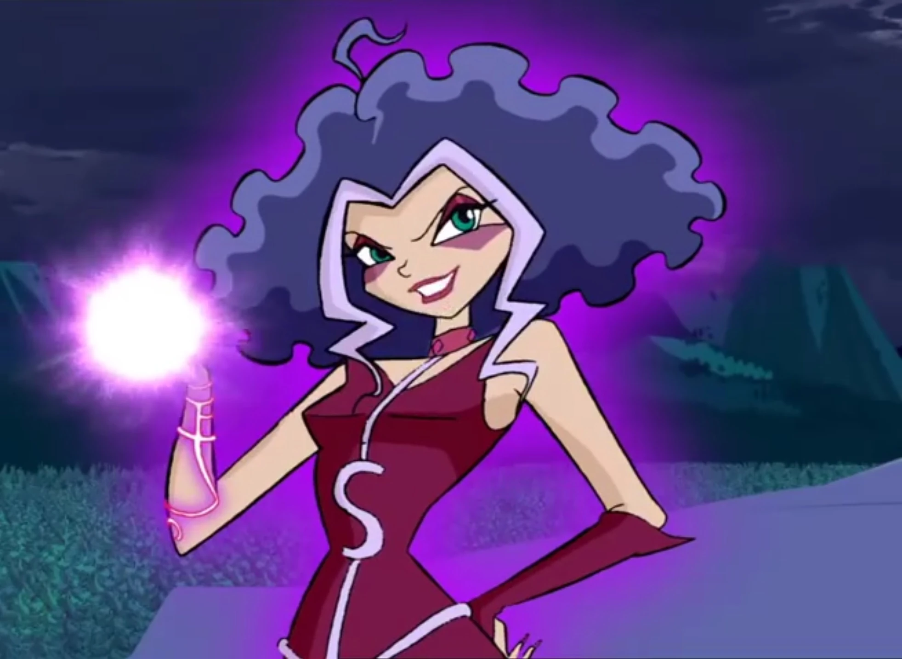

Notable Characters
(Season 1)
The content here is from The Winx Club fan wiki.The Winx Club
Bloom
Bloom is the Fairy of the Dragon Flame. Her title comes from the source of her powers: a flame from the Great Dragon, a deity that created the Magic Dimension. She is the most powerful fairy and the leader of the Winx Club. Before discovering her magical powers, she lived on Earth as an ordinary human, unaware of her birth on the planet Domino.
Stella
Stella is the outgoing and spontaneous Fairy of the Shining Sun. She has long, blonde hair and her powers involve manipulating light and using energy from the sun and moon. Stella is Bloom's best friend and she enjoys being the center of attention. Stella is the oldest of the Winx, as she was held back at Alfea for a year. Throughout the series, Stella creates her own outfits for the group to follow her dreams of becoming a fashion designer.
Musa
Musa is the Fairy of Music from the planet Melody. She has blue-black hair that is worn in short pigtails. Her powers involve manipulating sound waves and music. She loves music and dance, and can be pessimistic at times. She is the most outspoken and sensible of the group.
Flora
Flora is the sensitive and shy Fairy of Nature from the planet Lynphea. She has long, brown hair with blonde bangs. Flora draws her strength from plants and her room at Alfea resembles a greenhouse. She is the Winx Club's peacemaker, believing in protecting others and the environment.
Tecna
Tecna is the Fairy of Technology. She has light skin, short magenta hair (usually worn in a pixie cut), and blue-green eyes. She is from the planet Zenith and draws her magical abilities from machinery and energy. Tecna has a photographic memory and a knowledge of science, helping her invent devices to help herself and her friends. Tecna enjoys experimenting with computer programs and playing video games. She is orderly and rational, using logic to solve problems.
The Trix
Icy
Icy is the eldest of the trio and their leader, whose powers are derived from ice. She despises Bloom and is the most competitive with the Winx. Icy is more aggressive than Darcy but calmer than Stormy. Icy's skin is pale; she has light-blue hair tied in a high ponytail, and wears a blue and teal outfit.
Darcy
Darcy, the middle of the trio, derives her powers from shadows and darkness. She enjoys tormenting pixies and is less aggressive than her friends, preferring subtle and manipulative techniques. She has fair skin, long brown hair, and a dark purple outfit, which is sometimes accompanied by glasses.
Stormy
Stormy, the youngest of the trio, has power over stormy weather. She is the hottest-tempered of the group and is prone to violent outbursts. Her impulsiveness often leads the trio to trouble. She has tan skin, a cloud-shaped purple hairstyle, and a reddish-violet outfit.
The Specialists
Sky
Sky is the leader of the Specialists. He is the crown prince. He has fair skin, blue eyes, and blond hair. He and Bloom date throughout the series. Sky is the son of King Erendor and Queen Samara. He is best friends with his bodyguard Brandon.
Riven
Riven is the competitive and stubborn maverick of the Specialists. He has light skin, short, spiky pink hair and blue-violet eyes. His mother abandoned him at birth and he is wary of women. Riven's weapons of choice are a red-purple phantosaber and a meteor hammer.